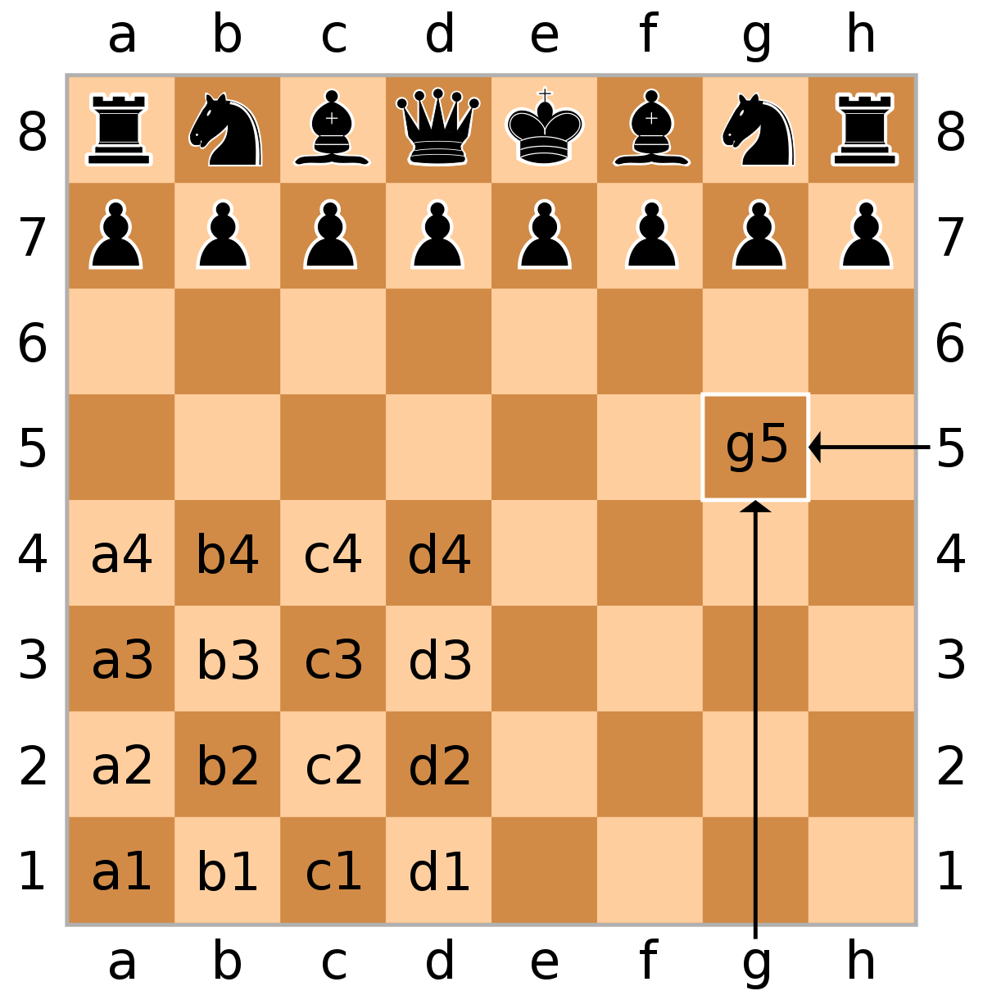

Portable Game Notation (PGN)¶
PGN (Portable Game Notation) is an easy-to-read format which records both the moves of the game (in standard algebraic notation) and any related data such as the names of the players, the winner/loser, and even the date the game was played.
{kind=link}
PGN code begins with a set of “tag pairs” (a tag name and its value), followed by the “movetext” (chess moves with optional commentary).
Tag pairs¶
Tag pairs begin with an initial left bracket [, followed by the name of the tag in plain text (ASCII). The tag value is enclosed in double-quotes, and the tag is then terminated with a closing right bracket ]. A quote inside a tag value is represented by the backslash immediately followed by a quote. A backslash inside a tag value is represented by two adjacent backslashes. There are no special control codes involving escape characters, or carriage returns and linefeeds to separate the fields, and superfluous embedded spaces (or SPC characters) are usually skipped when parsing.
PGN data for archival storage is required to provide seven bracketed fields, referred to as “tags” and together known as the STR (Seven Tag Roster). In export format, the STR tag pairs must appear before any other tag pairs that may appear, and in this order:
- Event: the name of the tournament or match event.
- Site: the location of the event. This is in City, Region COUNTRY format, where COUNTRY is the three-letter International Olympic Committee code for the country. An example is New York City, NY USA.
- Date: the starting date of the game, in YYYY.MM.DD form. ?? is used for unknown values.
- Round: the playing round ordinal of the game within the event.
- White: the player of the white pieces, in Lastname, Firstname format.
- Black: the player of the black pieces, same format as White.
- Result: the result of the game. This can only have four possible values: 1-0 (White won), 0-1 (Black won), 1/2-1/2 (Draw), or * (other, e.g., the game is ongoing).
Movetext¶
The movetext describes the actual moves of the game. This includes move number indicators (numbers followed by either one or three periods; one if the next move is White’s move, three if the next move is Black’s move)
An x is written if there is a capture, and the two-character algebraic name of the final square the piece moved to. The letter abbreviations are K (king), Q (queen), R (rook), B (bishop), and N (knight). The pawn is given sn abbreviation P is used. The algebraic name of any square is as per usual algebraic chess notation; from white’s perspective, the leftmost square closest to white is a1, the rightmost square closest to the white is h1, and the rightmost (from white’s perspective) square closest to black side is h8.
To resolve ambiguity, the piece’s file letter or numerical rank is inserted after the moving piece’s name. Thus, Nge2 specifies that the knight originally on the g-file moves to e2.
Kingside castling is indicated by the sequence O-O; queenside castling is indicated by the sequence O-O-O .
Comments¶
Comments are inserted by either a ; (a comment that continues to the end of the line) or a { (which continues until a }). Comments do not nest.
Example¶
Here is an example taken directly from the chess.com archives:
1.e4 d5 2.exd5 Nf6 3.d4 Nxd5 4.c4 Nb6 5.Nc3 g6 6.Be3 Bg7 7.h3 O-O 8.Qd2 Nc6 9.Nf3 e5 10.d5 Ne7 11.g4 f5 12.O-O-O e4 13.Ng5 h6 14.Ne6 Bxe6 15.dxe6 Qxd2+ 16.Rxd2 Rad8 17.Bc5 Rxd2 18.Kxd2 Rd8+ 19.Kc2 Nc6 20.gxf5 Nd4+ 21.Bxd4 Rxd4 22.Rg1 g5 23.c5 Nc4 24.Bxc4 Rxc4 25.Rd1 Bf6 26.Kb3 Rxc5 27.Nxe4 Rxf5 28.Nxf6+ Kf8 29.Ng4 h5 30.Ne3 Rf3 31.Rd5 g4 32.hxg4 1-0
For more details regarding PGN click here: More on PGN